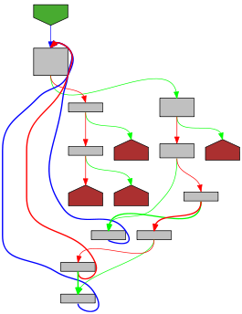

// Copyright 2013 The Go Authors. All rights reserved.
// Use of this source code is governed by a BSD-style
// license that can be found in the LICENSE file.
package json
import (
"bytes"
"unicode/utf8"
)
const (
caseMask = ^byte(0x20) // Mask to ignore case in ASCII.
kelvin = '\u212a'
smallLongEss = '\u017f'
)
// foldFunc returns one of four different case folding equivalence
// functions, from most general (and slow) to fastest:
//
// 1) bytes.EqualFold, if the key s contains any non-ASCII UTF-8
// 2) equalFoldRight, if s contains special folding ASCII ('k', 'K', 's', 'S')
// 3) asciiEqualFold, no special, but includes non-letters (including _)
// 4) simpleLetterEqualFold, no specials, no non-letters.
//
// The letters S and K are special because they map to 3 runes, not just 2:
// * S maps to s and to U+017F 'ſ' Latin small letter long s
// * k maps to K and to U+212A 'K' Kelvin sign
// See https://play.golang.org/p/tTxjOc0OGo
//
// The returned function is specialized for matching against s and
// should only be given s. It's not curried for performance reasons.
|
|
func foldFunc(s []byte) func(s, t []byte) bool {
nonLetter := false
special := false // special letter
for _, b := range s {
if b >= utf8.RuneSelf {
return bytes.EqualFold
}
upper := b & caseMask
if upper < 'A' || upper > 'Z' {
nonLetter = true
} else if upper == 'K' || upper == 'S' {
// See above for why these letters are special.
special = true
}
}
if special {
return equalFoldRight
}
if nonLetter {
return asciiEqualFold
}
return simpleLetterEqualFold
}
// equalFoldRight is a specialization of bytes.EqualFold when s is
// known to be all ASCII (including punctuation), but contains an 's',
// 'S', 'k', or 'K', requiring a Unicode fold on the bytes in t.
// See comments on foldFunc.
|

|
func equalFoldRight(s, t []byte) bool {
for _, sb := range s {
if len(t) == 0 {
return false
}
tb := t[0]
if tb < utf8.RuneSelf {
if sb != tb {
sbUpper := sb & caseMask
if 'A' <= sbUpper && sbUpper <= 'Z' {
if sbUpper != tb&caseMask {
return false
}
} else {
return false
}
}
t = t[1:]
continue
}
// sb is ASCII and t is not. t must be either kelvin
// sign or long s; sb must be s, S, k, or K.
tr, size := utf8.DecodeRune(t)
switch sb {
case 's', 'S':
if tr != smallLongEss {
return false
}
case 'k', 'K':
if tr != kelvin {
return false
}
default:
return false
}
t = t[size:]
}
if len(t) > 0 {
return false
}
return true
}
// asciiEqualFold is a specialization of bytes.EqualFold for use when
// s is all ASCII (but may contain non-letters) and contains no
// special-folding letters.
// See comments on foldFunc.
|

|
func asciiEqualFold(s, t []byte) bool {
if len(s) != len(t) {
return false
}
for i, sb := range s {
tb := t[i]
if sb == tb {
continue
}
if ('a' <= sb && sb <= 'z') || ('A' <= sb && sb <= 'Z') {
if sb&caseMask != tb&caseMask {
return false
}
} else {
return false
}
}
return true
}
// simpleLetterEqualFold is a specialization of bytes.EqualFold for
// use when s is all ASCII letters (no underscores, etc) and also
// doesn't contain 'k', 'K', 's', or 'S'.
// See comments on foldFunc.
|
|
func simpleLetterEqualFold(s, t []byte) bool {
if len(s) != len(t) {
return false
}
for i, b := range s {
if b&caseMask != t[i]&caseMask {
return false
}
}
return true
}
|
|